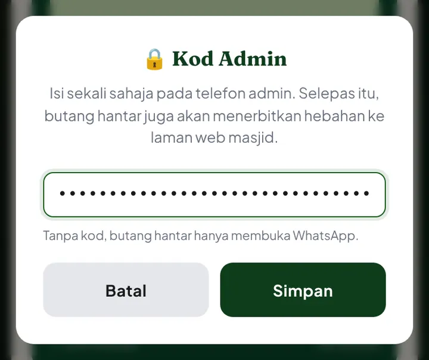
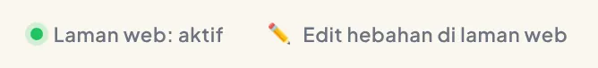
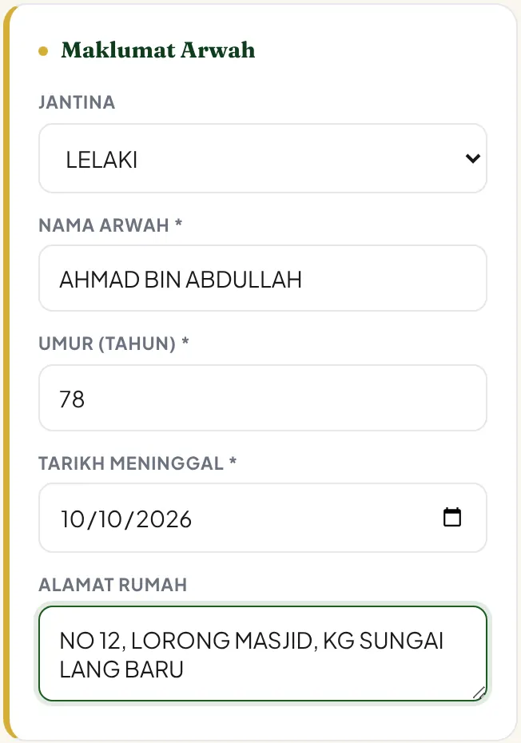
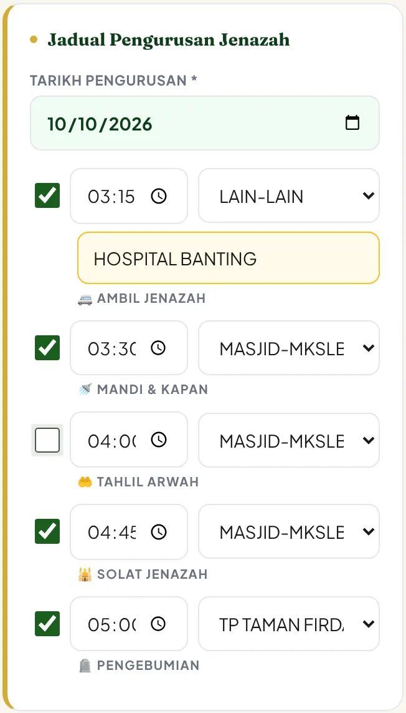
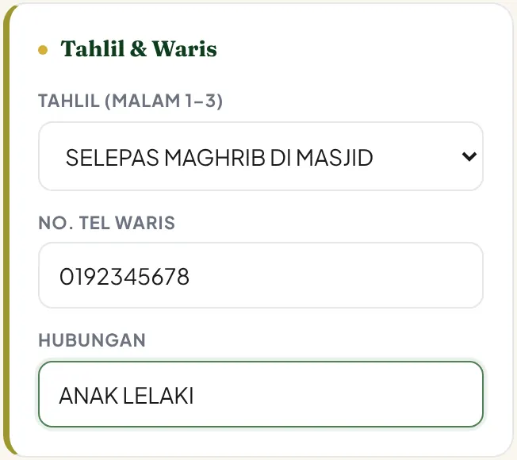
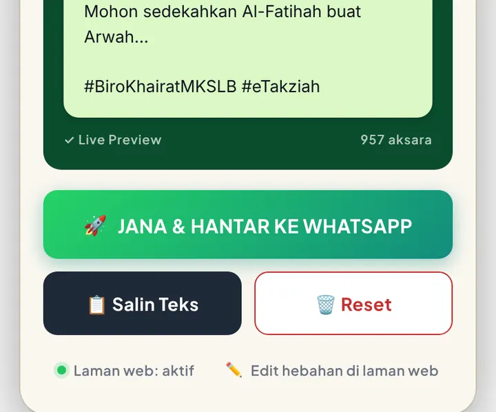
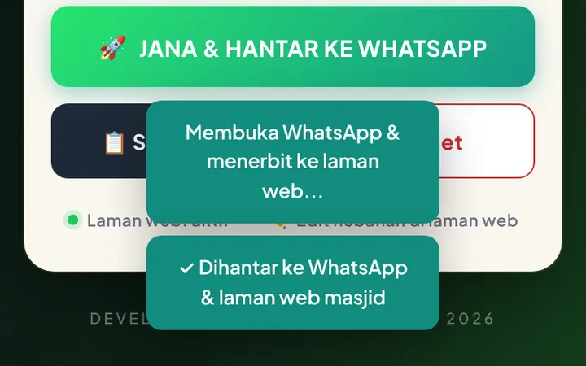
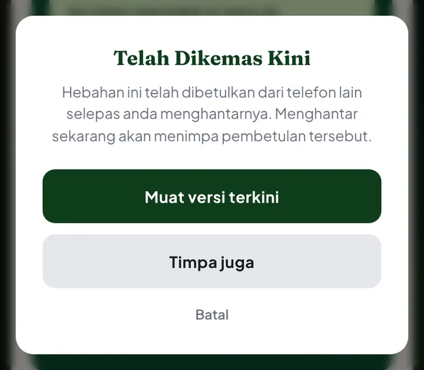
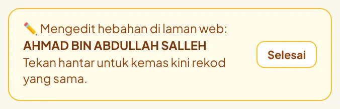
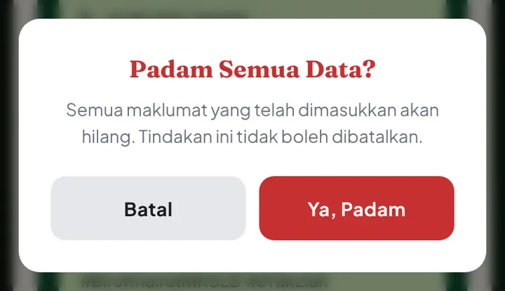

Cara menjana hebahan kematian yang kemas, terus ke WhatsApp dan laman web masjid.
Buat sekali pada telefon anda. Selepas itu tidak perlu diulang.
Buka e-takziah.masjidkslb.com dalam Chrome. Tekan butang Pasang yang muncul, atau tekan ⋮ → Add to Home screen.
e-Takziah kini dibuka seperti aplikasi biasa dari skrin utama.
Di bahagian bawah borang, tekan ● Laman web: tidak aktif. Tampal Kod Admin yang diberi oleh Adib, kemudian tekan Simpan.

Bila berjaya, titik bertukar hijau:

Ruangan bertanda * wajib diisi. Ruangan lain boleh dibiar kosong dan tidak akan muncul dalam hebahan.
Pilih jantina, isi nama penuh, umur dan tarikh meninggal. Huruf besar dibuat secara automatik.


Pilih waktu tahlil dari senarai. Isi nombor telefon dan hubungan waris jika ada.

Kotak hijau menunjukkan rupa hebahan sebenar. Bila betul, tekan 🚀 JANA & HANTAR KE WHATSAPP.

WhatsApp akan terbuka dengan teks hebahan yang siap. Pilih Adib dan hantar.
Kembali ke e-Takziah. Mesej "✓ Dihantar ke WhatsApp & laman web masjid" bermaksud hebahan sudah dipapar di laman web masjid.

Tidak perlu risau. Hebahan boleh dibetulkan.
Betulkan terus dalam borang yang sama, kemudian tekan 🚀 sekali lagi.
Hebahan di laman web akan dikemas kini, bukan ditambah baru. Mesej yang muncul: "✓ Hebahan di laman web dikemas kini".
Amaran ini melindungi hebahan daripada tertimpa secara tidak sengaja.
Bermaksud Adib sudah membetulkan hebahan ini dari telefonnya.

Tekan Muat versi terkini. Borang anda akan dikemas kini dengan pembetulan tersebut.
Bermaksud hebahan ini sudah dipadam atau tamat tempoh di laman web. Tekan Jangan terbit dan hubungi Adib jika tidak pasti.
Muncul bila hebahan dimuat semula dari laman web untuk dibetulkan. Setiap hantaran akan mengemas kini hebahan yang sama. Tekan Selesai bila sudah habis membetulkan.

Bila hebahan sudah betul dan dihantar, tekan 🗑️ Reset, kemudian Ya, Padam.

Wajib Reset sebelum membuat hebahan untuk arwah seterusnya.
Mesej kecil muncul di bawah skrin selepas menekan butang.
| ✓ Dihantar ke WhatsApp & laman web masjid | Berjaya. Tiada tindakan lain. |
| ✓ Hebahan di laman web dikemas kini | Pembetulan berjaya disimpan. |
| Membuka WhatsApp & menerbit ke laman web... | Sedang dihantar. Tunggu mesej ✓ hijau. |
| Membuka WhatsApp... (tanpa perkataan "laman web") | Telefon ini belum ada Kod Admin. Hebahan tidak masuk ke laman web. Lihat Persediaan. |
| Tiada sambungan... | Internet lemah. Tekan 🚀 sekali lagi bila talian baik. Tiada pendua akan berlaku. |
| Sila lengkapkan ruangan wajib (*) | Ada ruangan bertanda * yang masih kosong. |
| Kod Admin tidak sah | Kod salah atau sudah ditukar. Minta kod baru daripada Adib. |